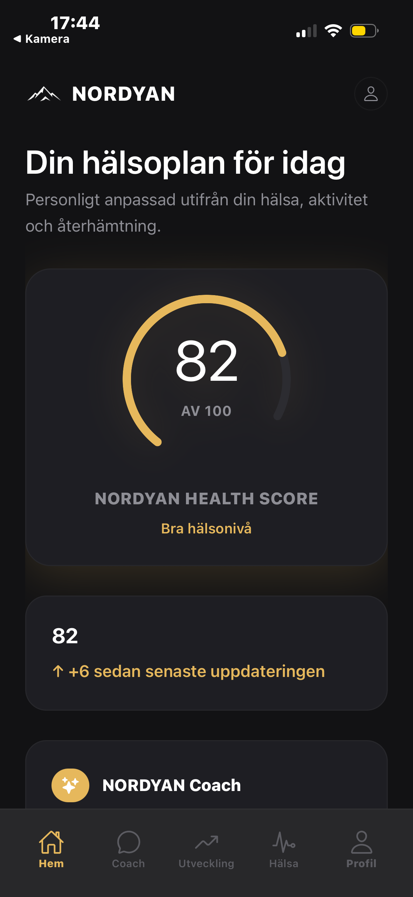
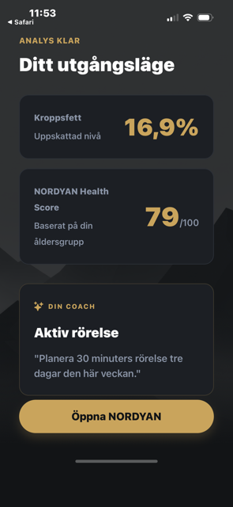
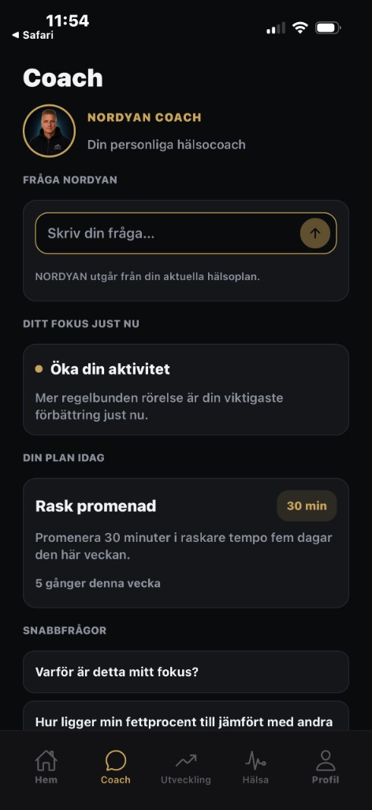

Health Score
82
AV 100
Din hälsa. Tydligare.
DIN HÄLSA. TYDLIGARE.
NORDYAN samlar det som påverkar hur du mår och gör det begripligt – så att du vet vad som är viktigast att fokusera på just nu.
Få tillgång Se hur NORDYAN fungerar →
MER ÄN EN SIFFRA
NORDYAN samlar det som påverkar ditt mående och gör helheten enklare att förstå – med en Health Score och tydliga prioriteringar.
Sömn
Kvalitet och återhämtning
Aktivitet
Träning, steg och vardagsrörelse
Kropp
Komposition, styrka och biomarkörer
Livsstil
Mat, alkohol, stress och vanor
Utveckling
Trender, mönster och långsiktig framgång
Health Score
82
AV 100
Din hälsa. Tydligare.
SÅ FUNGERAR DET
NORDYAN hjälper dig förstå vad som påverkar din hälsa, följa utvecklingen över tid och fokusera på rätt saker vid rätt tidpunkt.
Din profil, livsstil och utgångspunkt skapar din personliga baseline.
Veckocheck-ins, kroppsmått och Health Score visar hur din hälsa förändras över tid.
NORDYAN Coach hjälper dig förstå utvecklingen och vad som är viktigast att fokusera på just nu.


58 bpm
Vilopuls
4 av 5
Träningspass
2 enheter
Snitt / vecka
Testosteron 20 nmol/L
Fritt T 32 pmol/L
SHBG 51 nmol/L
Fettprocent 18 %
Vikt 89,0 kg
9 842
Snitt / dag
DIN NORDYAN COACH
NORDYAN Coach utgår från din profil, din baseline, dina check-ins och hur du utvecklas över tid. Det gör råden mer relevanta för dig – och hjälper dig förstå vad du bör prioritera just nu.
Kopplar samman din livsstil, kropp, aktivitet och utveckling.
Förstår din utgångspunkt och hur dina värden förändras över tid.
Hjälper dig gå från information till tydliga nästa steg.
12 VECKOR
Health Score
82
↑ +8 sedan start
SÖMN
7,2 h
↑ +0,6 h
Jämnare senaste 4 veckorna
AKTIVITET
8 432 steg
↑ 14 %
+1 036 steg/dag
FETTPROCENT
18,0 %
↓ 2,4 %-enheter
Sedan start
INSIKT
Din Health Score har förbättrats 8 poäng. Ökad vardagsaktivitet och jämnare sömn har bidragit mest.
REDO FÖR NÄSTA STEG?
Samla din hälsodata, följ din utveckling och få personliga insikter från NORDYAN.